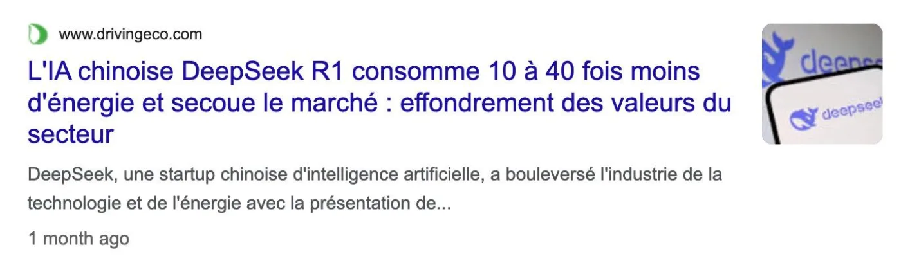
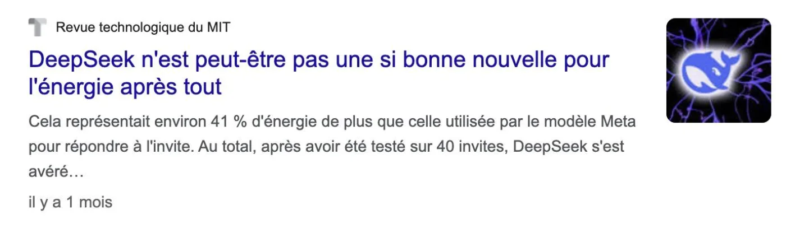
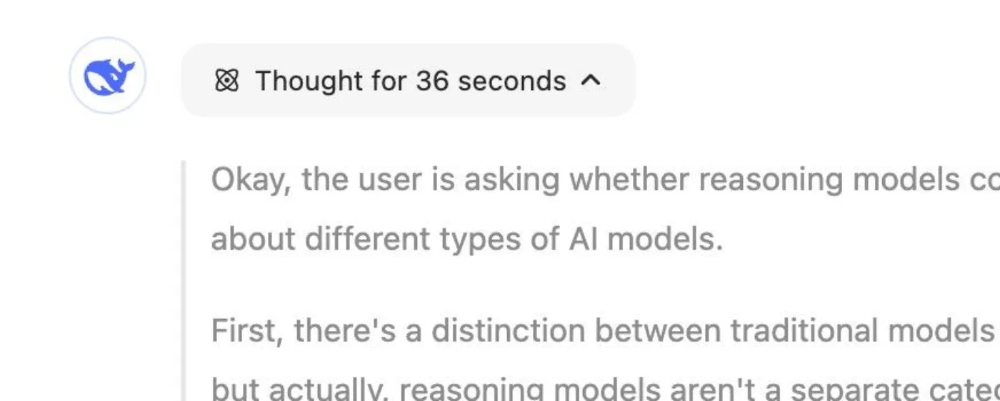
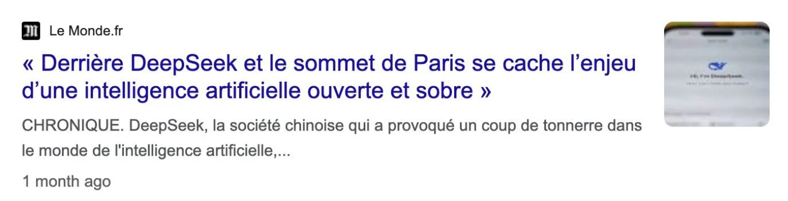
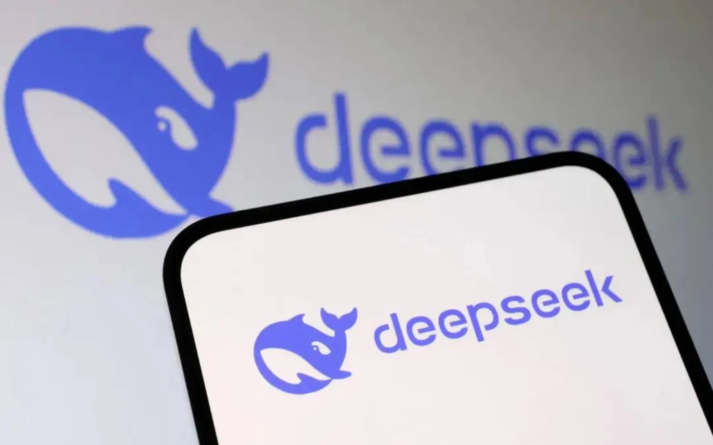

DeepSeek est-il frugal ?
La presse a répondu deux fois, et deux fois l'inverse. Les deux réponses peuvent être vraies.
Ce qu'on a lu à la sortie


Le chiffre qui a retourné le récit
+ 87 %
d'énergie par réponse, face au modèle de Meta, à efficacité par jeton comparable.
La raison tient en trois mots : R1 écrit long.
MIT Technology Review, 31 janvier 2025, mesures de Scott Chamberlin.
Trois facteurs, pas deux
Pour chaque requête, ce que consomme un modèle dépend de trois choses.
Taille du modèle
En milliards de paramètres.
Architecture
Par exemple mélange d'experts ou MatFormer.
Longueur du texte
En jetons, entrée et sortie.
Les trois se multiplient. Un seul d'entre eux ne dit rien de la facture finale.
V3 répond, R1 raisonne
V3
Il répond directement à la question.
R1
Il écrit d'abord sa réflexion, puis la réponse. Seul R1 est concerné par le surcoût.
À taille et architecture égales, celui qui raisonne consomme plus que celui qui répond tout de suite.
La réflexion se paie en jetons
Cette réflexion est produite, donc calculée, donc facturée en énergie.
Elle s'affiche à l'écran, repliée, avant la réponse.

Combien de jetons pour une question
Sur le jeu de tests AIME, R1 est passé d'environ 12 000 à 23 000 jetons par question d'une version à l'autre.
Un modèle qui ne raisonne pas répond en quelques centaines.

Fiche du modèle DeepSeek-R1-0528, publiée par DeepSeek.
Un mélange d'experts
Au total
671 Md
de paramètres dans DeepSeek V3.
Actifs par jeton
37 Md
seulement. Le reste dort.
Fiche du modèle DeepSeek-V3 publiée par DeepSeek. Chiffres repris tels quels par le catalogue compar:IA, comparia.beta.gouv.fr/models
Ce que le mélange d'experts change
N'en réveiller que quelques-uns à la fois baisse l'énergie dépensée par jeton : 45 % de moins, en moyenne, qu'un modèle dense de taille comparable.
Sur compar:IA, les modèles ouverts affichent les deux chiffres : le total et la part active.

Arcep et PEReN, mai 2026, pour l'écart moyen entre mélanges d'experts et modèles denses.
À l'entraînement
2,79 millions d'heures de carte graphique pour V3, chiffrées à 5,6 M$.
Ce compte exclut, DeepSeek le dit lui-même, toute la recherche et les essais qui ont précédé.

DeepSeek-AI, DeepSeek-V3 Technical Report, décembre 2024, table 1. La location de carte graphique y est théorique, à 2 $ l'heure.
À l'inférence
Par jeton
Chaque jeton coûte peu : le mélange d'experts n'en réveille qu'une petite part.
Par réponse
R1 raisonne, donc il produit énormément de jetons. Il finit parmi les plus gourmands. V3, lui, n'a pas ce surcoût.
L'énergie d'une réponse, c'est l'énergie d'un jeton multipliée par le nombre de jetons. Ici, c'est le nombre qui l'emporte.
La bonne cause
Ce qui pèse, ce n'est pas la taille du modèle : ses 671 milliards de paramètres ne tournent jamais tous en même temps. C'est le volume de texte qu'un modèle de raisonnement produit pour chaque réponse.
Sur compar:IA, la classe énergétique mesure le prix du jeton. Le bilan d'une discussion compte les jetons réellement produits. Les deux se lisent ensemble.
Classe énergétique compar:IA, A à F par million de jetons de sortie, estimation EcoLogits 0.10.2, PUE 1,2.